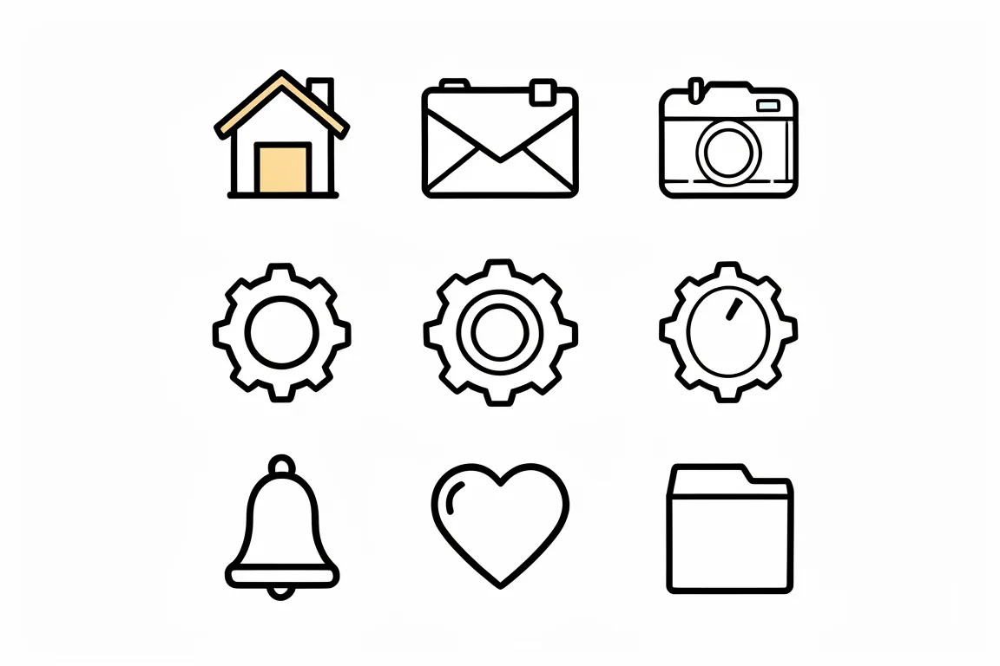

ikoner · 2014–present · også: Material Icons, Googles Material-ikonsystem
Googles åpne ikonsystem: geometriske glyfer på et 24 dp-rutenett med hjelpelinjeformer. Material Icons (2014) ga fem temaer; Material Symbols (2022) er en variabel skrift med akser for fyll, vekt, gradering og optisk størrelse.

Kjerneidé
Et ikonsystem er et sett med tokens: ett rutenett og fire variable akser lar én glyf fungere i alle størrelser, vekter og tilstander.
Designprinsipper
Tegn på et 24 × 24 dp-rutenett med et aktivt område på 20 × 20 dp og 2 dp polstring.
Tilpass hver glyf til en hjelpelinje: en sirkel på 20 dp, et kvadrat på 18 dp, et stående rektangel på 16 × 20 dp eller et liggende rektangel på 20 × 16 dp.
Sett streken til 2 dp for vekt 400, fra 100 til 700 på vektaksen.
Bruk fyllaksen (0 eller 1) for tilstand: omriss for inaktiv, fylt for aktiv.
Sett aksen for optisk størrelse til gjengivelsesstørrelsen (20, 24, 40 eller 48 dp).
Bruk hjørneradius 2 dp for den avrundede stilen og 0 dp for den skarpe stilen; omrissstilen bruker 0–1 dp.